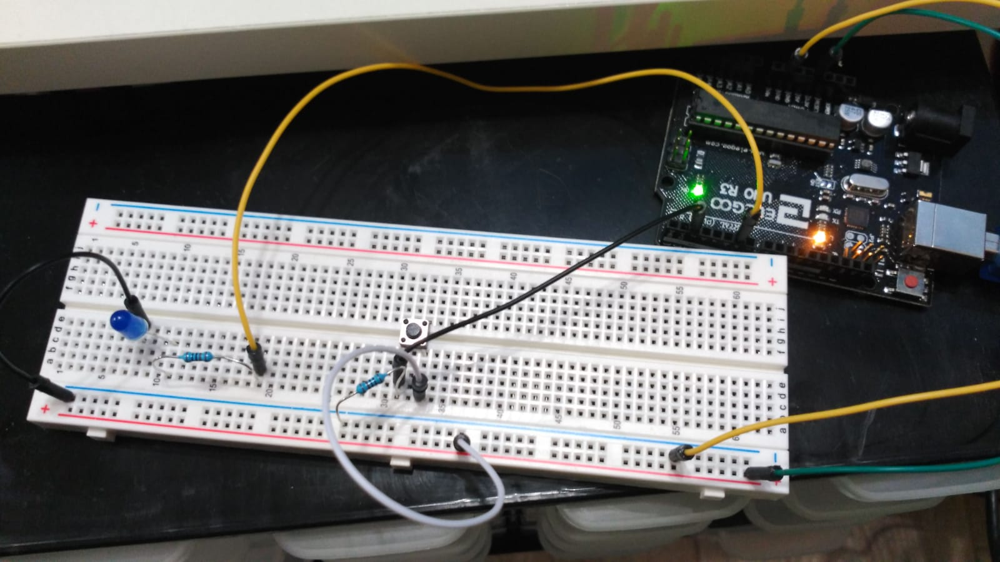

Para conectar el pulsador, seguimos el siguiente ejemplo: tutorial pulsador. Y para conectar un led seguimos el siguiente ejemplo: encender/apagar un LED.
En la siguiente imagen podemos ver el circuito conectado:
El código es el siguiente:
int PULSADOR = 2;
int LED = 6;
void setup() {
pinMode(LED, OUTPUT); // Poner el LED como salida
pinMode(PULSADOR, INPUT); // Poner el pulsador como entrada
digitalWrite(LED, LOW); // El LED empezará apagado
digitalWrite(PULSADOR, LOW);
Serial.begin(9600); // Para escribir en consola
}
void loop() {
// Botón pulsado.
if(digitalRead(PULSADOR) == LOW ){
digitalWrite(LED, LOW); // Apagar el LED
}
// Botón no pulsado.
if(digitalRead(PULSADOR) == HIGH ){
digitalWrite(LED, HIGH); // Encender el LED
}
}
Ahora el LED se encenderá cuando mantengamos pulsados el botón.